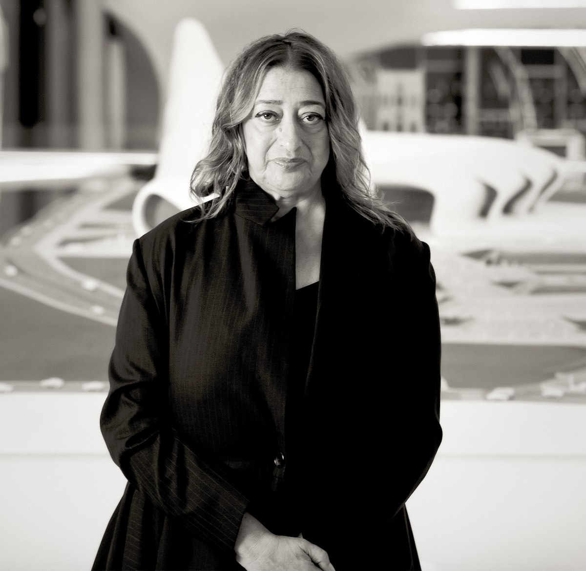
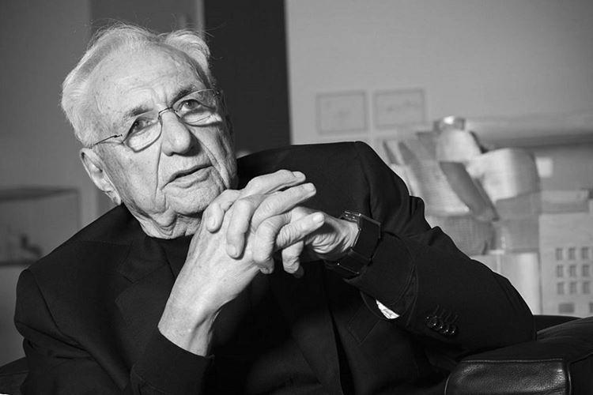
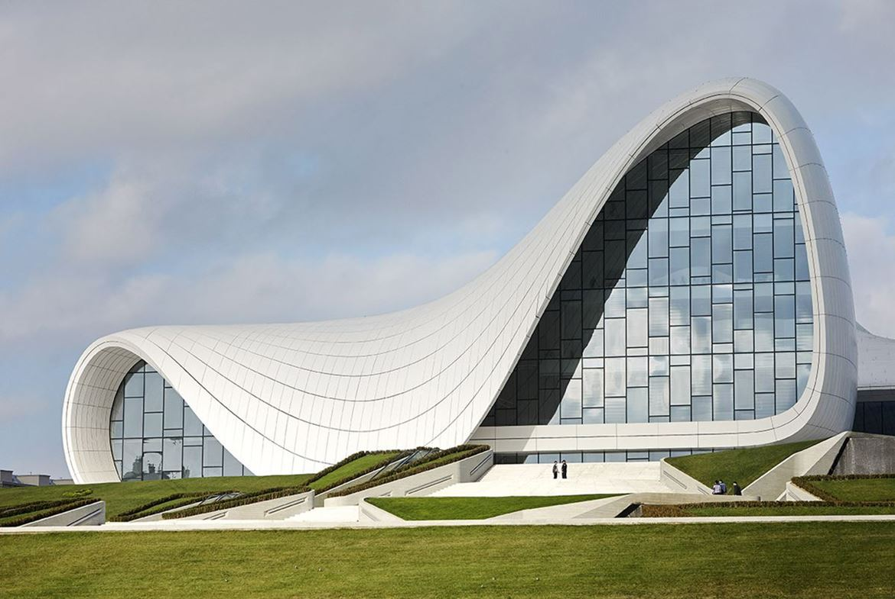
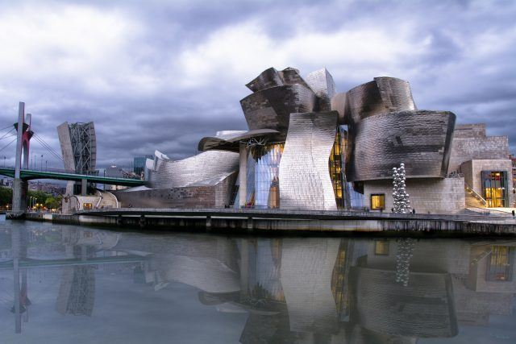

Mimarlar

Zaha Hadid
Modern mimaride devrim yaratan Zaha Hadid, Pritzker Mimarlık Ödülü'nü kazanan ilk kadın mimardır.

Frank Gehry
Frank Gehry, dekonstrüktivist mimarlığın öncüsü olup Guggenheim Müzesi gibi ikonik yapılar tasarlamıştır.
Yapılar

Heydar Aliyev Merkezi
Zaha Hadid tarafından tasarlanan bu merkez, dalgalı hatlarıyla ünlüdür.

Guggenheim Müzesi
Frank Gehry tarafından tasarlanan, Bilbao'da bulunan çağdaş sanat müzesidir.